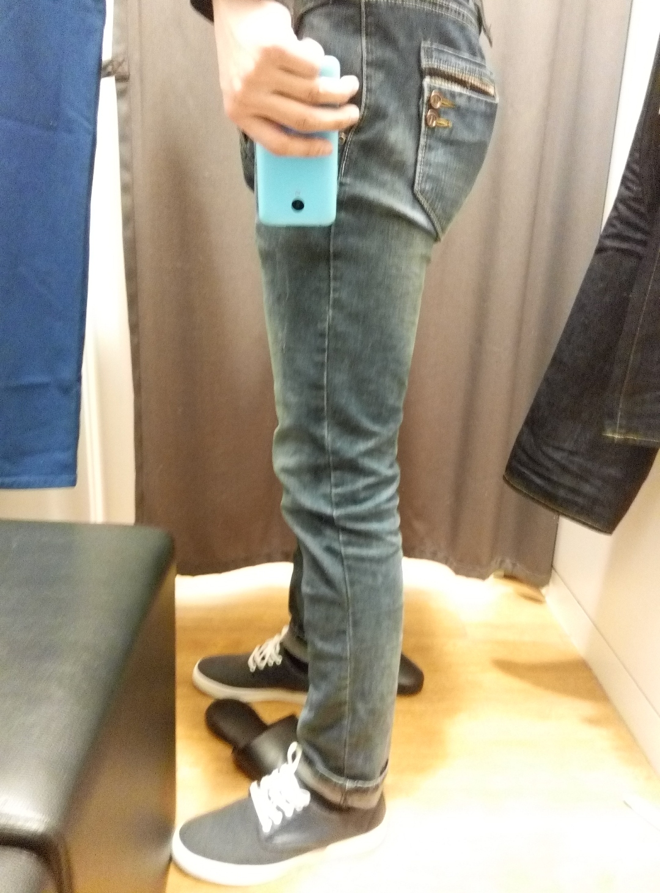

名字:
ChooO
性别:男
介绍:前支教团成员/直男癌晚期/焊接坑中
问题
答案
新建于:2015-01-25 03:08:40 PM，更新于2016-03-07 02:00:18 PM
Pre上一页
Next下一页
跳页:
正文: 
这是今天中午买裤子试了十几条仍没有好的选择之后无奈得拍的。答主180。是不是腿挺短的？！！
———————————————————_——————
不请自来———————————————— 答主汉子……爱跑步的大屁股汉子，所以屁股不仅大，而且翘……
从小屁股就大。小时候老被家里人嘲笑我＇老婆腚＇（老婆就是妇女的意思，腚就是屁股的意思），没错，是家里人嘲笑我，就是我爸我妈！
后来不知不觉得睡觉变成了侧卧，即便我仰躺着入睡的，醒来时也变成了侧卧。为毛？！！后来我终于发现了，当我仰躺着的时候，腰是悬空的，时间一久很疼啊！！！
现在啊，我发现我不知道自己穿多大的裤子，因为如果买的腰刚好的话，屁股就太紧了，小翘臀太明显了吧……只能买大几号的……没错，是大几号orz……腰部大几号的裤子，好难看啊！！谁穿谁知道……
好处……摸自己的屁股比摸女人的爽算不算～哈哈。我有腰窝你们信吗～～～
Pre上一页
Next下一页
跳页: